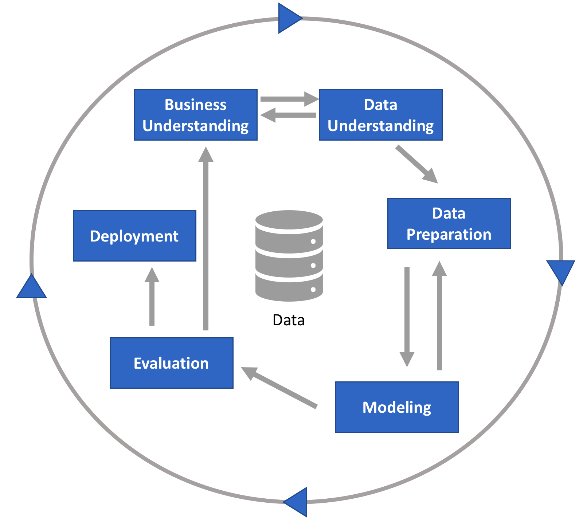

Cross-industry Standard process for data mining
Cross-industry standard prcess for data mining on 1990-luvulla kehitetty puitekehys analytiikka- ja datatiede projektien suorittamiseen ja raportointiin. Puitekehys on hyvin iteratiivinen, ja se sopii kaikentyyppiseen mallinnustyöhön.
Alla olevasta kaaviosta näet CRISP-DM mallin vaiheet, ja pääset tutustumaan kuhunkin vaiheeseen tarkemmin vasemmalta löytyvän valikon kautta.
